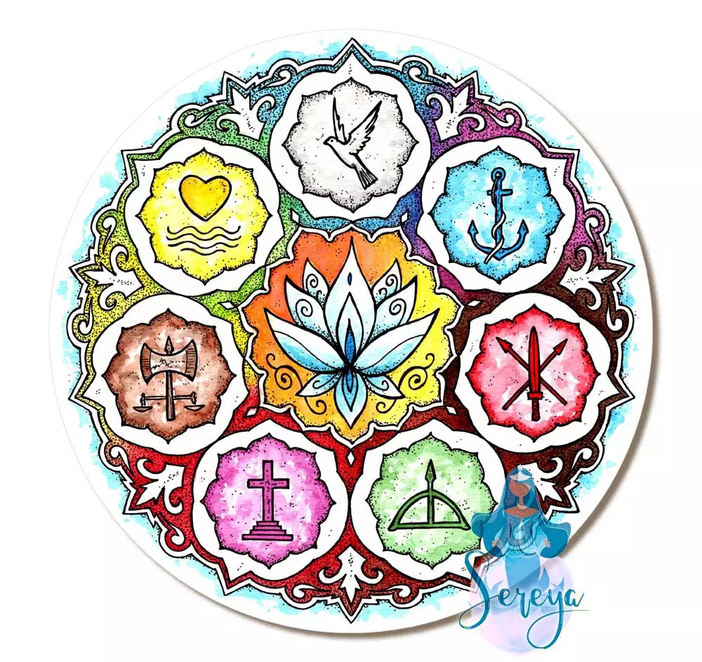

Curiosidades
Selecione uma das Entidades para visualizar mais detalhes.
O que é Orixá?
Os orixás são divindades da religião afro-brasileira, representando forças da natureza e aspectos da
vida humana. Cada orixá possui qualidades, histórias, cores e símbolos específicos, e está associado
a temas como amor, guerra e saúde.
Exemplos incluem: Oxalá, Iansã, Ogun e Oxum.
O que é Entidade?
Entidade refere-se a espíritos, guias ou ancestrais que podem ser invocados ou cultuados. As entidades incluem espíritos de pessoas desencarnadas e forças elementares. Na Umbanda, por exemplo, são agrupadas em linhas de trabalho, como caboclos e pretos-velhos, e atuam como guias espirituais, mas não são necessariamente divindades.